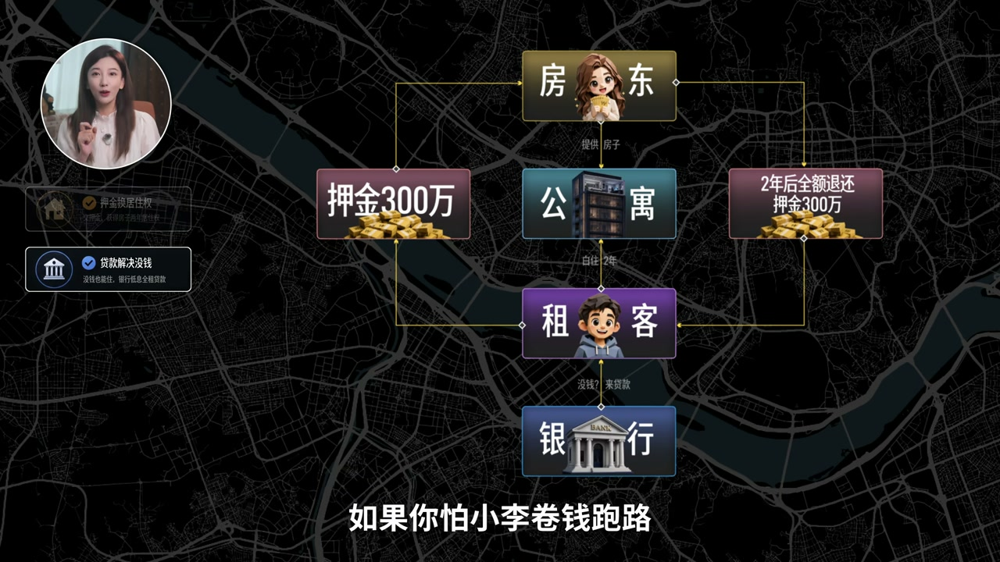
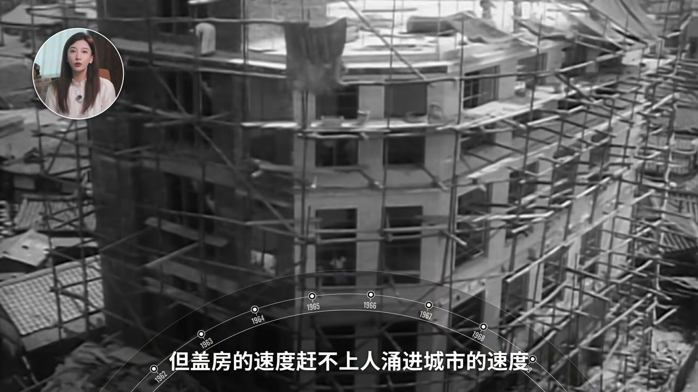
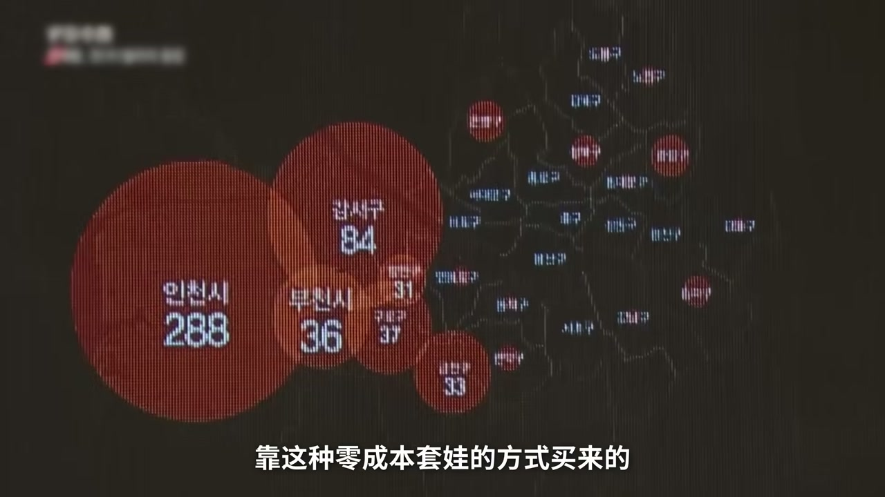
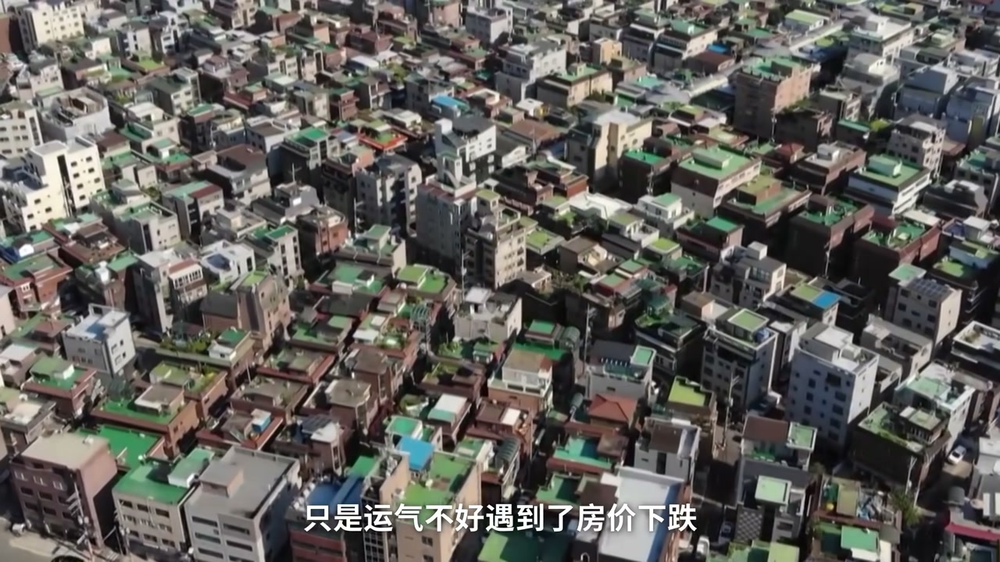
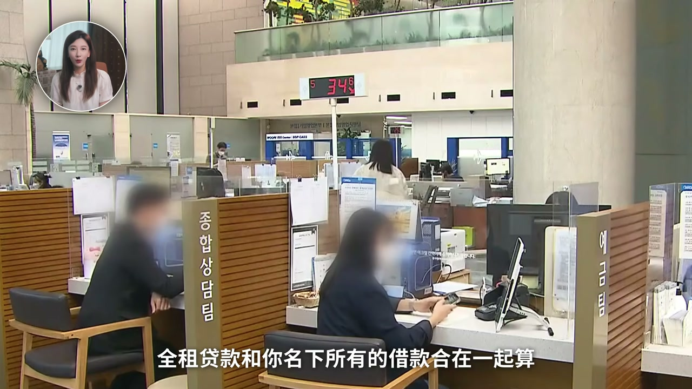
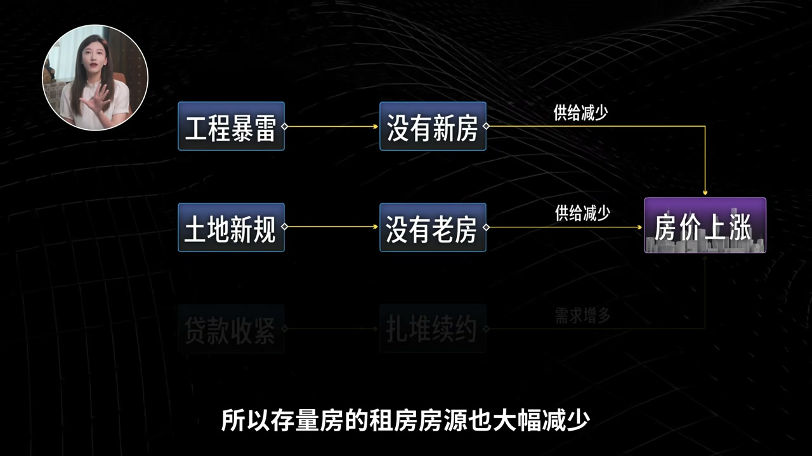
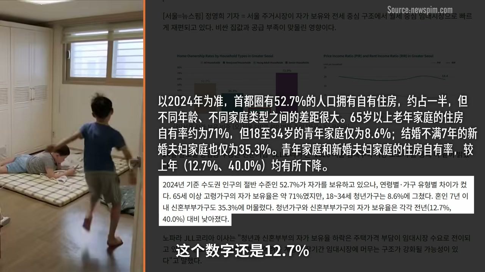

内容要点
街头韩国民众把「不动产」当作最快翻倍信仰；视频把全球独一份的全租房（전세）讲成一场百年民间互助如何异化为杠杆游戏：押金可占房价七八成，房东用上家押金当首付套娃买房。2022–2023 年 villa 诈骗（「villa 王」「建筑王」）与全租倒挂、加息同时爆发，近四万人卷进押金纠纷。政府「两头堵」——国企兜底受害房源改公租、收紧保险/评估价、DSR 与土地交易许可——但公寓月租占比上升、年轻人买房退出人生清单、首尔人口净流出。导语校正 ASR：庞氏骗局（非「彭氏」）、理赔（非「李培」）、villa（非「微辣」）、京畿道（非「经济道」）、轻生（非「清身」）、IMF（非单独「MF」）。
知识结构
押金≈房价大头换免租居住；金融自由化后「缺口投资」用押金首付连环买房。
villa 估价虚高；加息后押金回不去，合规公寓也因房价下跌爆雷。
特别法/HUG 兜底+打压空罐头杠杆；公寓供给收缩后全租/房价反弹。
月租侵蚀强制储蓄；青年自有率下滑；首尔挤出三十岁家庭。
全租房不是「房租为零的福利」，而是高度依赖顺风局的民间杠杆；雷爆后账单由租客、纳税人与未上车的年轻人共同承担，梯子还在，只是改成往下滑。
00:00-04:20全租房：押金换白住的全民杠杆
街头问卷里「不动产」高频出现：韩国人更信房子能生钱。全租房听起来离谱——租一套五百万的公寓，押三百万给房东白住两年，到期全额退还；没钱可贷低息全租贷款，还可买国企保险防跑路。
对房东来说，这笔押金是免息资金，可买第二、第十套房。巅峰时全租押金规模可比韩国全年 GDP 的一半。制度可追溯到 1910 年代；六七十年代高利率时代它像民间互助：房东得免息资金、租客强制储蓄、政府零财政支出解决住房。
亚洲金融危机后金融自由化，房价上涨窗口出现「缺口投资」：全租价率（押金/房价）冲到 75%–80%，用两成自有资金撬多套房。


04:20-07:50空罐头、诈骗王与全租倒挂
公寓价格透明，villa（低层无电梯住宅）成交稀疏可被「做出」估价：假报告把五百万估成八百万再按七成收押金，真实价值不够还押金——「空罐头」。2022 年「villa 王」名下上千套房暴雷；「建筑王」骗取数亿押金，多名租客因积蓄尽失轻生。
2021 下半年韩国率先加息，全租贷款利率从约 2% 飙到 7%，押金价格雪崩，出现「全租倒挂」：高点签约的老租客退租时找不到同等新押金，房东当初买房钱就是上家押金——无钱可退。诈骗+下跌双重打击，押金返款事故金额三年翻七倍多。


07:50-12:10政府两头堵：兜底租客、敲打房东
特别法第一版只给受害者低息贷款被骂惨；后来国企从法拍市场买爆雷房改公租、用差价抵房租。对房东打三补丁：保险改认公示价、全租贷款并入 DSR、特定区域土地交易许可（须实住两年再出租）。HUG 三年净亏约数百亿，纳税人买单。
结果诡异：villa 租赁转向月租（「villa 恐惧症」），公寓全租价与房价却因新房暴雷、存量出租受限、租客贷不到款而续约顶价，首尔公寓价格再创新高。


12:10-16:28阶梯抽芯：月租、逃离首尔与下行滑梯
全租本是无房者强制储蓄工具；如今首尔公寓月租占比过半，租金涨幅抽走年轻人收入且不可退还。青年家庭自有率下滑，买房移出人生清单；首尔成人口净流出最多城市，首因「住宅」，挤出的是要结婚生子的三十多岁人。
总统李在明称全租消失是「正常化」，首尔市长吴世勋称是庶民住房阶梯崩塌。视频留下三指标：全租押金是否追回历史高点、国企垫付是否继续升、月租占比是否再升。

完整转录（563段）
以下文本由 Whisper 自动转录，可能存在识别误差；正文与导语已按语境校正专名与术语。
你来了
前提前我们在街头问了韩国人一个问题
你觉得让一笔巨款最快翻倍的办法是什么
那一个词儿高频出现
不动产
不动产
不动产有这么多的关心
你看
现在可以说是全球最疯狂的韩国股市
已经够刺激了
可在韩国人自己心里
能让钱生钱的头号信仰还是房子
而提到韩国的房地产
就一定照不开一个可以说是
全球独一份的神奇制度
全租房
这个制度啥意思呢
假如小李作为房东
你来租房
我只要你押300万
就让你在一套价值500万的公寓里
白住两年
两年后呢
300万一分不少
全退给你
你说你没有300万
没关系
银行会给你一笔超低息的全租贷款
如果你怕小李卷钱跑路
还可以找国企买一笔保险
跑了包赔
是不是听起来挺有吸引力的
我也是这么觉得
因为我可以拿着你这笔押金
去买第二套
第十套
第一百套房子
有点坑手套白蓝的意思
你是不是已经想到了一个词
彭氏骗局
但在韩国
这种叫全租房的玩法
曾经一度是超过半数人的租房首选
巅峰时期
全租房的押金规模
都赶上韩国全年GDP的一半了
而也是这一套玩法呢
在2023年
因为房东恶性诈骗
和房价崩盘的双重打击
经历了一场大崩盘
导致将近4万人卷钱纠纷
倾家荡产
那这套制度到底是个什么怪物
崩盘崩得有多惨
而这套制度的崩盘的账单
又躲在了谁的头上呢
大家好我是小李
今天我们就来禁掉一下全租房
如果你是第一次听说全租房
一定会觉得非常离谱
咱们平时租房都是押一负三
最多再给一个月中间费
韩国人怎么直接押一百负零了
这合理吗
其实全租这个模式
早在1910年的朝鲜就有了
模式和今天几乎没有差别
但第一个转折点
60到70年代
战后的韩国人口猛增
但盖房的速度
赶不上人涌进城市的速度
政府为了把钱都引去重工业
把利率最高拉到了30%
民间借钱难入登天
所以老百姓们一拍即合
手上有房的房东拿到了押金
等于免利息借到了一大笔钱
随他去放贷去买地
那咋样听的租客
把钱押给房东
白住两年
相当于强制储蓄
而政府一分钱没花
解决了一大批人的住房问题
所以全国房闹在韩国
甚至可以说是一种
民间互助的特色政策
也搭起了一套
给普通人从无到有的住房阶梯
但是呢
很快就淡逝了
1997年亚洲金融危机之后
MF一边来救市
一边来韩国提条件
其中一条就是金融自由化
韩国的银行也开始
放开给家庭放房贷的口子
30%的高低率也一句不复返
老百姓借钱开始变容易了
而韩国尤其是首尔
经济和房价也开始微型反弹
这个时候也不知道是哪个房东
第一个发现
既然首尔房价天天在涨
我干嘛还要眼巴巴吃点利息呢
直接拿你叫的押金当首付
去买下一套新房不就行了
买完再租给新的全租客
再收一笔押金
再买下一套
岂不美哉
到底有多美呢
这里需要引入一个概念
就是全租价率
就是押金占房价的百分比
它相当于是这套游戏的杠杆倍数
押金占到80%
你买房只要掏两成
2008到2017年
韩国的全租价率涨了将近一倍
首尔公寓的全租价率
直接冲到了历史最高点
平均75%
西大门 成东 成北这些区
全都逼近80%
但同一时期
首尔的房价大部分时间
还在原地踏步
中间甚至跌了4年
累计也就涨了百分之十几
咱们举个例子看一下
对了 为了方便大家理解
这篇我们全部用人民币来举例
那相当于你看中了一套500万的房子
只需要一套100万就能买下来
而你手上如果本来就有500万
这样的房子你可以直接买5套
同时这一时期
房价还没有反应过来
你发现没有
这就给炒房客制造了一个绝佳的窗口期
到了2017年
房价终于开涨的时候
这个被称作缺口投资的炒房模式
已经变成了一项全民课程
房地产抢市 开班收费
学员们一人手里十来套房
那场景真可以说是房地产胜宽了
但你注意
到了这个阶段
即便是最疯狂的时候
房东至少还要掏那20%
还不完全是空手套白狼
这20%的自由资金
就是那根拴住风筝的线
所以问题来了
万一这根线断了呢
如果你在韩国租房
一般有两大类选项
一类叫公寓
这里有小区有物业
属于大家向往的买房住房终点
而租房价格也是公开透明的
网上基本都能查到
那另一类叫villa
翻译过来是别墅
但不是那种独栋别墅
其实就是没有电梯和物业的低层住宅
住的都是刚工作的年轻人
和说要打拼的手飘
但villa和公寓的区别在于
价格不透明
因为villa一栋楼就那么几户
上次成交可能还是两三年前
这就导致了villa的价格
是可以被做出来的
一个开发商盖了栋真实价值500万的别墅
找凭公司做个估价800万的假报告
然后再按800万去收租客的押金
你看
按照70%的全租价格来说
甚至都超过了真实的房价
那这种押金比价值还值钱的房子
韩国人给它起了个名字
叫空罐头
意思是
外表看这四套房
砸开一看里面是空的
那房子整个卖掉都不够还你的押金
而这种监管的真空地带
直接催生了震惊全韩国的恶性诈骗
2022年10月
首尔的一家小旅馆里
一名男子突然死亡
警察一查
好家伙
他名下竟然有1139套房
而这些房
全是在短短两三年内
靠着零成本套娃的方式买来的
而这个人也被媒体起了个名字
叫villa王
他这一死
1000多个空罐头
直接炸了
且不说没买保险的租客
他们的押金直接无处追逃了
而且买了保险的租客更绝望
因为李培必须向房东送他解约通知
现在人没了
父母也当场放弃继承
解约书根本找不到收件人
李培程序直接瘫痪
而他父母放弃继承的这1000多套房子的
更大一个原因
是因为他欠了3100万的房产税
在韩国或者说大部分国家
法拍房
先要补清税款
那税交
剩下的钱根本就不够还租客的押金了
除了他
还有一个更恶劣的人
叫建筑王
从2009年起
他就开始借用他人的名义买地
自建小型的公寓和villa
一共盖了2709套房
从665名租客手中
骗了2.68亿的押金
就因为这个所谓的建筑王
有接连4名租客
因为被骗光了毕生积蓄
相继选择清身
其中最年轻的只有26岁
讲到这你可能会觉得
那我租价格透明的公寓不就安全了吗
2022年之前
韩国人也是这么想的
从2021年下半年开始
因为通胀和负债率连年高起
韩国央行想在美联储之前率先加息
全租房的贷款利息也从2%飙到了7%
低息贷款没了
大家租不起全租了
押金价格也开始雪崩
这就出现了一个要命的现象
叫全租倒挂
你看
2022、23年到期的那批合同
恰好是2021年
押金比例最高点欠的那批人
所以高点经常的老租客要退租
低价市场里
找不到肯出同样价钱的新租客
那中间的这个差价
房东就得自己掏钱去补
可他当初买房的钱就是上一个租客的押金
所以他哪来的钱还你呢
而对于这一批租客来说
他们没有遇到Vela王或者建筑王
他们租的房子就是真的
价格也是公开的
合同也是合规的
只是运气不好
又到了房价下跌
所以全租诈骗和房价下跌的双重因素
让整个全租房的信任体系彻底崩塌
大规模的纠纷彻底爆发
从2021年的危机刚刚浮现
到2024年的高峰
全租房的押金返款事故金额
从29亿掉到了224亿
三年翻了七倍多
那么问题又来了
这笔捅破天的烂账
最后总得有人来背吧
那这个背锅的人会是谁呢
第一个被推出来背锅的是政府
你想
一边是几十万快要跳楼的租客
另一边是快要崩盘的房地产
政府不背也得背
于是他们硬着头皮
玩了一招两头赌
先看第一套
是给受害者补窟楼
2023年6月
韩国火线通过了一部全租诈骗特别法
但这部法的第一版
主打一个让你自咎
他们的政策是
国家不掏钱
只借你低息贷款
那受害者一看就起笑了
我饭都吃不上了
你还让我借钱
那被骂了一年多
实在斗不住了
2024年底的修法
国家对台真正出手
由韩国的国企把爆雷的房子
从法派市场上买下来
改成公租房
用买房省下的差价抵你的房租
让你免租住上十年
听着是兜底了
但是从被骗到真正拿到补偿
还是要熬上至少一年多
所以吐槽的人一直不少
再看另一头
是去敲打房东
全租房是一套存在了上百年的民间制度
政府没有
也没办法一刀就把他杀死
所以他们的做法是
打了三个补丁
去敲打那些歪心思的房东
第一个补丁打的是那些空罐头
以前保险和评估价的百分百都抵
2013年5月起规则开始切换了
不看评估价
只认政府的公示价格
所以借靠虚高房价
空手套摆扬的Villa房东就彻底废了
第二个补丁打的是资金杠杆
以前全租贷款走的是单路的渠道
低息不限量
2015年10月起
这条VIP通道也被砍了
全租贷款和你名下所有的借款
合在一起算
全部的利息加起来
不能超过你年收入的四成
你算一下你还能贷多少
这条线在韩国叫DSR
额度一超
银行就不放款了
租客借不到钱
房东自然也收不到那笔天价押金了
第三个补丁打的是土地
从25年底开始
韩国政府开始在全售
以及经济道的特定区域
推行土地交易许可制度
那你以后就不能再像建筑王那样
专门为了租房去买地买房
你必须要在你买房的地方实际居住两年
此外还有些配套的大大小小的规定
这翘倒一下 那翘倒一下
我们再看一下这条两头土的制度
政府一共掏了多少钱
其中兜底的国企HUG
三年净亏了大约340亿
甚至亏到需要把200亿的道路供税股票
划赠给他们补哭了
所以归根到底
花的还是全体纳税人的钱
而电池区的这些钱
真正追回来的只有不到1乘3
全是烂账
所以刚才问题的答案是
有锅大家一起背
那接下来我们再看看这两头土的效果如何呢
先看微辣折头
2016年上半年
沙尔菲公寓的租赁交易里
78.1%是月租
那全租只剩下两成多
但比较讽刺的是
根据韩国官方的研究
这并不是两头都取了效果
而是
2022年那波诈骗留下的心理阴影
韩国人管这叫微辣恐惧症
那我们再看公寓折头
反常识的来了
之前是房地产过热
经历了爆雷和各种政策的敲打
房价应该是冷却降价
结果12的公寓价格反而暴涨
全租价格两年涨了19%
平均押金从277万涨到了330万
这里面的原因就有点多了
你可以跟着我这幅图一起理解一下
第一是因为没新房了
2021年韩国率先加息
融资成本随之高涨
那直接引爆了接下来22-24年的
一系列工程暴雷事件
导致建设项目的开工量暴跌
这就导致了两三年后的惊天
烂尾楼变多了
交房量变少了
那紧接着是老房子的流动性减少
就是咱们刚说过的土地许可制度
你买了房必须先自己住两年再出租
所以存量房的租房房源也大幅减少
最后是因为租客这边的贷款收紧
手头的钱少了
既不敢轻易换租
也没资金买房上车
这就导致了老房的租约续约率一下提升了
你看 新房没有
旧房不出
租客炸退续约
价格就这么被顶上去了
然后就出现了非常诡异的一幕
那些租不起公寓的人
转头又回到了他们两年前拼命逃离的Villa
你反应过来没有
本来是诈骗
本来从Villa吓跑了
现在是公寓的高价
又把人赶回去了
所以我们在这回头总结一下
全租房爆雷后的三年都发生了什么
保险在收紧
贷款在收紧
租客被赶来赶去
信任崩盘了
国家的账本上砸出了一个百亿级的窟窿
而这么大一场雷之下
首尔的房价反而创了历史新高
那么代价又是什么呢
2025年一整年
首尔的公寓价格大涨了8.98%
均价涨上了大约800万人民币
比爆雷前的历史高点还要高
但这是已经有房的人的故事
同一场崩盘
露在还没上车的人身上
是另外三件事
第一件是储蓄灌煤了
如果你还记得全租房的初心
会发现它原本是帮煤房的人强制储蓄
攒首付买房的工具
但最新的数据是
首尔公寓的租赁合同里
月租第一次超过了一半
而首尔公寓新签的月租
两年前平均是5500块
今年是6900块
涨了25%
年轻人住的二十三日平的单间
同样在涨价
按照统计
首都圈的家庭月收入的18.4%
都交给了房租
而这些钱和全租押金
有个本质区别
就是花出去就没了
所以交越多的人越来越多
被强制储蓄的人就越来越少了
而这也间接导致了
接下来的第二件事
就是买房已经不是大家的人生计划了
2016年的首尔租赁市场报告里
有一组对比
在首都圈的整体
52.7%的家庭是有自己的房产
其中65岁以上的家庭是71%
但18到34岁的青年家庭只有8.6%
而一年前这个数字还是12.7%
而这里面新婚夫妇也从40%
掉到了35.3%
自己的钱攒不下来
银行的钱接下来太贵
再加上在年轻人之间
集市勤乐已经成为了一种流行文化
所以买房这件事
正在被移出这代人的人生清单
而接下来的第三件事
是那些留不下来的人正在逃离首尔
根据韩国统计厅的正式结论
2025年首尔是全国人口
近流出最多的城市
近三年139.9万人离开的首尔
其中60%处在经济道
而流出原因的第一位
白纸黑字写着住宅两个字
这里面还藏着一个很扎心的细节
数据还能看到
其实20出头的人还在往首尔涌入
而他们是为了上大学和为了工作
那些真正被挤出去的
其实是30多岁的人
他们要结婚了要生孩子了
需要一间像样的房子
而这恰好是当年该采成住房阶梯的那个年纪
首尔变成这样一座城市
20多岁他欢迎你来打工
30多岁他请你搬出首尔
而以上还只是一切正常的人生
这三件事发生在没有遇到任何骗子的人身上
而那些遇到骗子的人呢
在全宗诈骗事件里
官方认定的将近4万名受害者中
40岁以下的人占了将近76%
而在法院判决的原文中我们看到一句话
相当多受害者的押金
就是他们的全部财产或者大部分财产
所以房价是涨回来了
但涨的是那些有房人的资产
月租的比例提高了
抽的是没房的人的年轻人的工资
韩国人爬了几十年的那家住房阶梯
其中中间的那一级全租正在被抽掉
而抽掉之后梯子并没有消失
它只是不再向上了
有的人从公寓划回了Villa
有的人从全租划进了月租
有的人从首尔划去了经济道
它变成了一道下行的华体
而这件事在韩国也已经吵到了最高层
今年6月
李在民总统说
全租是只有韩国才有的一种民间借贷
它的消失是正常化的过程
但首尔市长吴时勋隔空开炮
说全租消失不是正常化
是庶民的住房阶梯崩塌的政策惨案
但吵得再凶
有一件事双方都没否认
梯子确实塌了
而对已经滑下去的人来说
它是怎么塌的根本不重要
这就是韩国全租房的来龙去脉
不得不承认它却是有过这些辉煌的
好的一面
但也由凌晨本的幻觉
扭曲了所有人对风险的感知
全租房并不是韩国独有
但却只有韩国
把这种高度依赖经济顺风局的民间杠杆
做成了全民级的制度
而这件事留给全世界的悬念是
全租房会不会像大家预感的那样
彻底消失
如果你也好奇这个问题
小李给你留下三个值得关注的指标
第一
首尔公寓的平均全租押近
会不会追上
2020年1月的那个历史最高点
第二
博企还是邮寄垫付出去的钱
会不会继续掉头向上
第三
月租占比还会不会接着提高
聪明的你知道为什么是这三个指标吗
请在评论区告诉我吧
最后想问评评的你一个问题
听完这些
再让你做一次选择
如果现在只有一份零租金白注的全租合同
摆在你面前
你还会不会接受呢
大家好
小李我们下次再见
拜拜